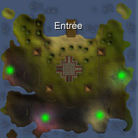
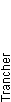
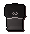

")
Assainissement
Introduction | Emplacement | Prérequis | Objets recommandés
Combat contre les hordes | Récompenses | Équipe de développement
Combat contre les hordes | Récompenses | Équipe de développement
Le mini-jeu Assainissement est réservé aux abonnés de RuneScape. Veuillez vous abonner pour y accéder.
Il s'agit d'un mini-jeu dit « sans danger ». En cas de mort pendant une partie, vous conserverez vos objets.
Introduction

Des avant-postes ont été construits près des brèches ouvertes par les monstres, afin d'accueillir les Chevaliers du néant dont la magie devait permettre de fermer les portails. Malheureusement, les envahisseurs sont devenus plus agressifs et ont envahi certains avant-postes avant la fin du rituel. Les Chevaliers du néant ont besoin d'aide pour continuer leur mission et repousser ces créatures monstrueuses.
Emplacement

Dirigez-vous vers le bateau indiqué sur l'illustration de gauche, juste au sud du Lady Lumbridge, et parlez à l'écuyer. Elle vous expliquera la situation et vous demandera si vous voulez rejoindre l'avant-poste des Chevaliers du néant.
Si vous acceptez, vous embarquerez à destination de l'avant-poste situé au sud de l'Atoll des singes.
À votre arrivée, vous vous retrouverez sur l'embarcadère nord de l'avant-poste illustré ci-dessous.

Quelques magasins sont à votre disposition, ainsi qu'une banque.
L'archerie vend des armes de combat à distance, comme par exemple des javelots, et fournit des pointes de flèche (jusqu'aux pointes runiques).
À la forge, le forgeron se propose de réparer les outils et armures des Galgals endommagés. Ses services sont similaires à ceux d'autres personnages de RuneScape, comme Bob à Lumbridge.
La boutique de magie vend des runes à un prix très raisonnable pour aider les aventuriers à repousser les monstres.
Prérequis
Le mini-jeu Assainissement compte trois niveaux de difficulté différents.
- Pour accéder à la barge débutant, il vous faut un niveau de combat d'au moins 40.
- Pour accéder à la barge intermédiaire, il vous faut un niveau de combat d'au moins 70.
- Pour accéder à la barge expert, il vous faut un niveau de combat d'au moins 100.
Objets recommandés
Comme vous devrez faire face à une véritable horde de monstres, en attaque comme en défense, le port d'une bonne armure est recommandé. Si vous vous spécialisez dans la magie, vous aurez besoin de runes pour lancer vos sorts. Si vous préférez le combat à distance, emportez vos munitions favorites. Notez cependant que vous ne pourrez pas récupérer vos runes et munitions perdues.
Pour vous battre sans interruption, il est recommandé d'emporter de la nourriture de bonne qualité. Si toutefois vous mourez au combat, vous réapparaîtrez sans perdre vos objets et pourrez donc retourner rapidement au cœur de l'action.
Il est également recommandé d'emporter un marteau et une cognée, car vous risquez fort de perdre vos éléments de défense (barrières et portes). Votre cognée vous permettra en effet de récupérer des bûches, et votre marteau de réparer les barrières et portes endommagées.
Remarque : les canons ne sont pas autorisés sur l'île.
Combat contre les hordes

Dès votre arrivée sur l'île, la bataille fera rage ! L'objectif du jeu est de défendre le Chevalier du néant. Si vous lui permettez de rester en vie, vous serez récompensé. Le nombre de monstres à affronter dépend du nombre de joueurs et du niveau de difficulté choisi (débutant, intermédiaire ou expert). Plus le groupe de joueurs est important, plus les monstres sont nombreux à traverser les portails.
Il y a quatre portails sur l'île, comme indiqué sur la carte ci-contre. Ces portails sont empruntés par les monstres répertoriés dans le paragraphe suivant. Chacun d'entre eux a ses particularités ou son rôle à jouer dans le mini-jeu, alors choisissez bien votre attaque ou votre défense.
 Chaque portail est protégé par un bouclier magique. Le Chevalier du néant doit détruire ces défenses pour vous permettre d'attaquer. C'est pourquoi vous devez faire tout votre possible pour le garder en vie jusqu'à ce que tous les portails soient vulnérables. Dans l'interface de gauche, par exemple, le portail bleu n'a plus de bouclier et peut donc être attaqué, mais les trois autres sont invulnérables.
Chaque portail est protégé par un bouclier magique. Le Chevalier du néant doit détruire ces défenses pour vous permettre d'attaquer. C'est pourquoi vous devez faire tout votre possible pour le garder en vie jusqu'à ce que tous les portails soient vulnérables. Dans l'interface de gauche, par exemple, le portail bleu n'a plus de bouclier et peut donc être attaqué, mais les trois autres sont invulnérables. Un message s'affiche dans votre fenêtre de messagerie lorsque le Chevalier détruit un bouclier magique. Vous pouvez aussi vérifier l'état des boucliers dans l'interface située en haut de votre écran.
La partie se termine quand vous avez protégé le Chevalier du néant pendant vingt minutes, ou lorsque tous les portails sont détruits (pour en savoir plus sur les résultats obtenus dans chaque cas, voir la suite de ce guide et la section consacrée aux récompenses).
Les monstres
Les niveaux de combat des monstres varient selon le niveau de difficulté choisi. Les aventuriers embarqués dans la barge débutant, par exemple, feront face à des monstres beaucoup moins dangereux que ceux de la barge expert.Remarque : Vous obtiendrez moins d'expérience de combat en affrontant ces monstres qu'en vous battant contre les autres créatures de RuneScape, car vous pouvez échanger vos points d'Assainissement contre de l'expérience supplémentaire.
![[image]](../../img/main/kbase/minigames/pest_control/brawler.gif)
|
![[image]](../../img/main/kbase/minigames/pest_control/defiler.gif)
|
|
| Bagarreur Les bagarreurs sont des monstres de grande taille, dont le niveau de combat et la couleur varient. Ces bêtes pesantes défendent généralement les portails et s'aventurent rarement à proximité du fort. Mais soyez prudent, car elles tenteront d'écraser tous ceux qui se mettront en travers de leur route ! Les bagarreurs vous empêcheront de passer, et vous devrez donc les contourner. |
Souilleur Les souilleurs sont agiles et rapides, et leur couleur et niveau de combat varient. Ils lancent des projectiles pointus à longue portée, qui leur permettent de vous attaquer (ou le Chevalier du néant) à distance, en infligeant des dégâts importants. |
|
![[image]](../../img/main/kbase/minigames/pest_control/ravager.gif)
|
![[image]](../../img/main/kbase/minigames/pest_control/shifter.gif)
|
|
| Ravageur Les ravageurs sont des petits humanoïdes pourvus de griffes semblables à celles d'une taupe. Ces griffes leur permettent de se tailler facilement un passage à travers vos défenses. Pour une sécurité optimale, tuez-les avant de perdre vos portes ! |
Baladeur Les baladeurs sont des combattants rapprochés dangereux. Leur dos est hérissé d'épines imposantes, leur couleur et niveau de combat varient, et surtout, ces créatures sont capables de créer des petits portails qui leur permettent de se téléporter sur de faibles distances. Ils peuvent même se téléporter derrière les barrières et en hauteur ! |
|
![[image]](../../img/main/kbase/minigames/pest_control/spinner.gif)
|
![[image]](../../img/main/kbase/minigames/pest_control/splatter.gif)
|
|
| Fileur Les fileurs flottent au-dessus du sol et utilisent leurs pattes d'araignée pour réparer les portails. Ils ne participent pas au combat pour attaquer le Chevalier du néant, mais vous devez les tuer pour les empêcher de réparer les portails. La destruction d'un portail fait exploser tous les fileurs avoisinants, et leur explosion inflige des dégâts et empoisonnements aux joueurs situés à proximité. |
Cloque Les cloques ressemblent à des grosses boules de fluide palpitant, avec un œil au milieu. Il ne faut surtout pas les sous-estimer. Elles sont dangereuses, car elles se font un plaisir de rebondir vers votre fort avant d'exploser violemment ! Leur explosion inflige des dégâts aux objets et joueurs environnants. |
|
![[image]](../../img/main/kbase/minigames/pest_control/torcher.gif)
|
||
| Torchère Les torchères ont aussi des couleurs et des niveaux de combat variés. Ce sont des créatures ailées qui s'envolent vers le Chevalier pour l'attaquer. Comme les souilleurs, les torchères peuvent lancer des attaques à distance, mais à base de feu magique. |
Attaque

Si vous attaquez, votre objectif est d'atteindre les portails et de les détruire. Les monstres à proximité des portails, tels que les bagarreurs, tenteront de vous en empêcher. Méfiez-vous surtout des fileurs (voir la section ci-dessus pour une description de ce monstre), car ils se remettent très rapidement de leurs blessures. Vous devez donc les attaquer en priorité.
Pour les mages et les rôdeurs, les tours offrent d'excellentes positions offensives. Vous pouvez donc vous placer en haut d'une tour pour lancer vos sorts ou vos flèches, tout en restant relativement en sécurité et en détournant l'attention des monstres qui pourraient s'attaquer au Chevalier.
Comme l'illustration ci-dessus l'indique, vous devrez affronter des baladeurs dans les tours. En effet, ces monstres sont capables d'ouvrir des portails et de s'introduire dans les zones proches de leur choix. Ils sont notamment capables de se téléporter sur de faibles distances, du sol jusque dans les tours !
Les attaquants jouent aussi un rôle important du point de vue de la défense, car le Chevalier du néant récupère 500 points de vie pour chaque portail détruit.
Défense
Vous pouvez toujours vous poster derrière vos défenses, mais les barrières ne suffiront pas à protéger le Chevalier du néant. Seuls vous et votre équipe pouvez assurer sa protection.En défendant le Chevalier du néant, vos principaux ennemis seront les souilleurs, les torchères et les baladeurs. Les souilleurs et les torchères sont dangereux car ils lancent des attaques magiques et des projectiles à TRÈS longue distance (pour plus d'informations, voir la section consacrée aux monstres).
Pour tuer ces monstres, vous devez faire appel à des guerriers ou à des mages/rôdeurs en position éloignée ou sur les tours. Les baladeurs sont particulièrement dangereux, car ils peuvent se téléporter juste à côté du Chevalier du néant pour l'attaquer sans délai !

Vous devez défendre les zones dont les portes sont cassées pour empêcher les monstres de s'approcher du Chevalier du néant, ou réparer les portes avec des bûches et un marteau.
Attention, si vous ne tuez pas les ravageurs, ils se feront un plaisir de défoncer à nouveau les portes que vous êtes en train de réparer !
Récompenses
Il y a deux types de victoires dans ce mini-jeu.
- Protéger le Chevalier du néant pendant vingt minutes.
- Détruire tous les portails.
Il suffit donc que le Chevalier du néant survive pour gagner la partie et recevoir des points.
- Si vous gagnez une partie en ayant pris la barge débutant, vous recevrez 2 points.
- Si vous gagnez une partie en ayant pris la barge intermédiaire, vous recevrez 3 points.
- Si vous gagnez une partie en ayant pris la barge expert, vous recevrez 4 points.
Remarque : Si vous n'infligez pas plus de 500 points de vie en dégâts au total (sur les monstres ou les portails), vous ne gagnerez aucun point d'assainissement. Vous pouvez cependant ajouter 50 points à votre total de dégâts en réparant des barrières cassées.
En gagnant une partie d'Assainissement, vous remporterez également un nombre de pièces d'or égal à dix fois votre niveau de combat.
Vous pouvez gagner 250 points au maximum. Pour dépenser vos points, parlez à l'un des Chevaliers du néant à l'avant-poste, ou faites un clic droit sur l'un d'eux. Notez cependant que les Chevaliers ne proposent de l'entraînement que dans vos compétences de niveau 25 ou supérieur.
Remarque : Si vous échangez 100 points à la fois, les Chevaliers vous offriront 10 % d'expérience en plus de l'expérience achetée. Si vous échangez 10 points à la fois, vous recevrez un bonus de 1 %.
Masse de Chevalier du néant
Cette masse unique est une bonne arme de combat rapproché, qui augmente également de 10 % les dégâts magiques infligés en la maniant.
Pour acheter cette arme aux Chevaliers, il vous faut des niveaux d'au moins 42 en Attaque, Force, Défense, Constitution, Combat à distance et Magie, et 22 en Prières.
| Objet | |||||||||||||||||||
| Bonus d'attaque | Bonus de défense | Autre | |||||||||||||||||
![[Image: Stab]](../../img/main/kbase/table_text/stab1.gif "Percer") |
 | ![[Image: Magic]](../../img/main/kbase/table_text/magic1.gif "Magie") |
![[Image: Range]](../../img/main/kbase/table_text/range1.gif "Combat à distance") |
|
|
|
![[Image: Summoning]](../../img/main/kbase/table_text/summoning1.gif "Invocation") |
![[Image: Prayer]](../../img/main/kbase/table_text/prayer1.gif "Prières") |
|||||||||||
![[image]](../../img/main/kbase/minigames/pest_control/mace.gif) Masse de Chevalier du néant* |
+ 22 | + 0 | + 41 | + 8 | + 0 | + 2 | + 2 | + 2 | + 2 | + 2 | + 0 | + 38 | + 6 | ||||||
* Ajoute 10 % aux dégâts magiques infligés lors son maniement.
Armure de Chevalier du néant
Pour acheter ces pièces d'armure aux Chevaliers, il vous faut des niveaux d'au moins 42 en Attaque, Force, Défense, Constitution, Combat à distance et Magie, et 22 en Prières.
Si vous portez une armure complète de Chevalier du néant (la masse n'en faisant pas partie), vous bénéficierez d'un « effet d'ensemble » qui dépend du heaume porté.
- Heaume de guerrier du néant : +10 % en Attaque et dégâts
- Heaume de mage du néant : +30 % en attaque magique
- Heaume d'archer du néant : +10 % en Attaque et dégâts
| Objet | |||||||||||||||||||
| Bonus d'attaque | Bonus de défense | Autre | |||||||||||||||||
|
|
|
|
|
|
|
|
||||||||||||
|  Plastron de Chevalier du néant |
+ 0 | + 0 | + 0 | + 0 | + 0 | + 45 | + 45 | + 45 | + 45 | + 45 | + 45 | + 0 | + 0 | ||||||
![[image]](../../img/main/kbase/minigames/pest_control/skirt.gif) Cotte de Chevalier du néant |
+ 0 | + 0 | + 0 | + 0 | + 0 | + 30 | + 30 | + 30 | + 30 | + 30 | + 15 | + 0 | + 0 | ||||||
![[image]](../../img/main/kbase/minigames/pest_control/gloves.gif) Gants de Chevalier du néant |
+ 0 | + 0 | + 0 | + 0 | + 0 | + 6 | + 6 | + 6 | + 4 | + 6 | + 6 | + 0 | + 0 | ||||||
![[image]](../../img/main/kbase/minigames/pest_control/melee_helm.gif) Heaume de guerrier du néant |
+ 0 | + 0 | + 0 | + 0 | + 0 | + 6 | + 6 | + 6 | + 6 | + 6 | + 6 | + 0 | + 0 | ||||||
![[image]](../../img/main/kbase/minigames/pest_control/mage_helm.gif) Heaume de mage du néant |
+ 0 | + 0 | + 0 | + 0 | + 0 | + 6 | + 6 | + 6 | + 6 | + 6 | + 6 | + 0 | + 0 | ||||||
![[image]](../../img/main/kbase/minigames/pest_control/ranger_helm.gif) Heaume d'archer du néant |
+ 0 | + 0 | + 0 | + 0 | + 0 | + 6 | + 6 | + 6 | + 6 | + 6 | + 6 | + 0 | + 0 | ||||||
Sceaux de Chevalier du néant
Les sceaux des Chevaliers du néant sont des armes puissantes contre le désordre chaotique des monstres qui traversent les portails. Pour libérer la puissance d'un sceau, faites un clic droit dessus et sélectionnez Frotter (ou utilisez l'option Actionner si le sceau est équipé). Votre sceau infligera alors des dégâts aux monstres avoisinants. Notez qu'il dispose de huit charges.
| Objet | |||||||||||||||||||
| Bonus d'attaque | Bonus de défense | Autre | |||||||||||||||||
|
|
|
|
|
|
|
|
||||||||||||
![[image]](../../img/main/kbase/minigames/pest_control/void_seal.gif) Sceau de Chevalier du néant |
+ 0 | + 0 | + 0 | + 0 | + 0 | + 1 | + 1 | + 1 | + 1 | + 1 | + 0 | + 0 | + 0 | ||||||
Équipe de développement
| Mise au point | |||
| Développeur : | Graham B | Développeur : | Tim C |
| Graphismes : | Joe R, Matt M, Linh N | Graphismes : | Wayne M, Matt M |
| Assurance qualité : | Andy C | Assurance qualité : | Nick C |
| Son : | Ian T | ||

Autres articles dans Mini-jeux
|
|
|
Aide supplémentaire Si cet article ne vous aide pas, les sections suivantes du site de RuneScape vous renseigneront peut-être davantage :
|
|